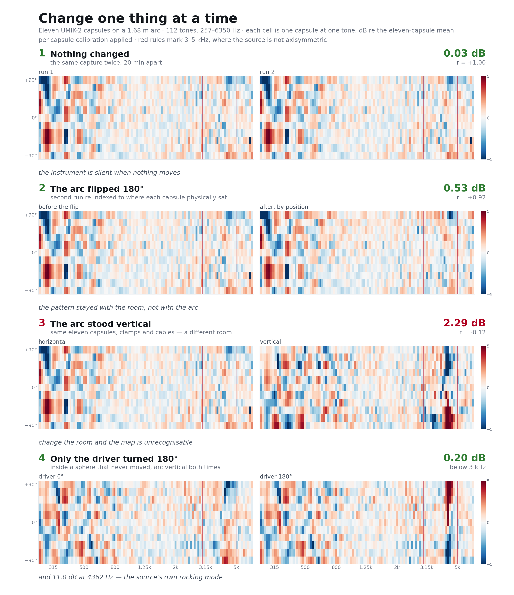

The arc is a good instrument; the map it draws is the room. Below 3 kHz the hub loudspeaker is a valid axisymmetric source, and from 3–5 kHz it is not.

Open. The loudspeaker map does not reproduce the propeller map (r = −0.04 tone-notched, +0.04
mixed; all 22 relabellings tested, best +0.24) — the propeller's own inflow, or the object at the hub,
still matters. The absolute anchor needs a 94 dB calibrator. Room geometry is unrecorded: hub height,
room L×W×H, foam, what stands near the arc ends.
Data. calibrator/sessions/2026-09-16 (capsules) and 2026-09-17 (arc);
levels and meta mirrored to the measurement repo, WAVs local. calibrator/rig.py captures and
read_map() is the single loader, so a figure cannot disagree with the capture about what a
level means; the bad band is SOURCE_SUSPECT_HZ. Every number here was recomputed from those
captures while this page was written. Where this page and CLAUDE.md disagree,
CLAUDE.md governs. rev 2, 2026-09-17.